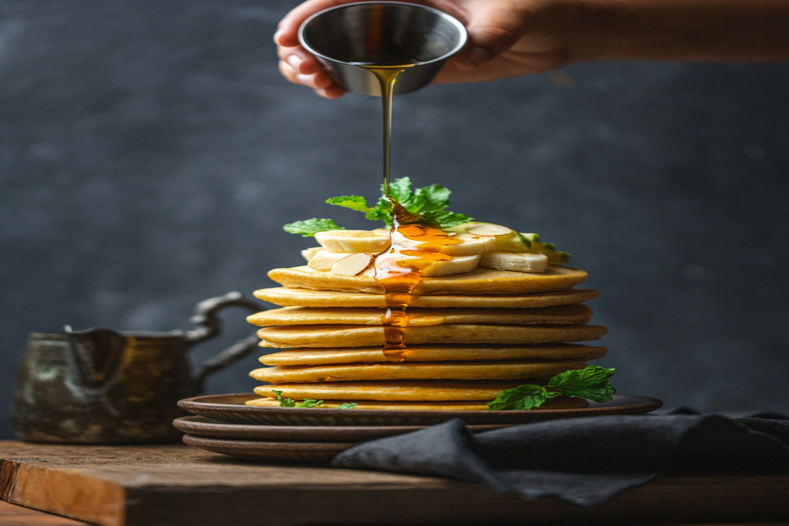
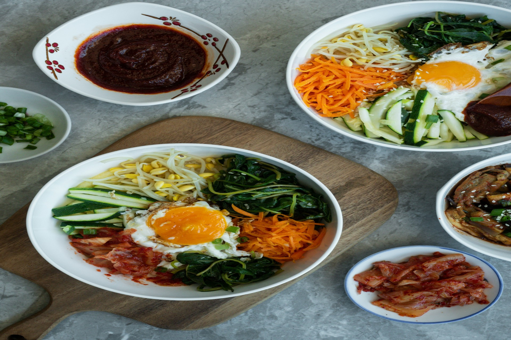
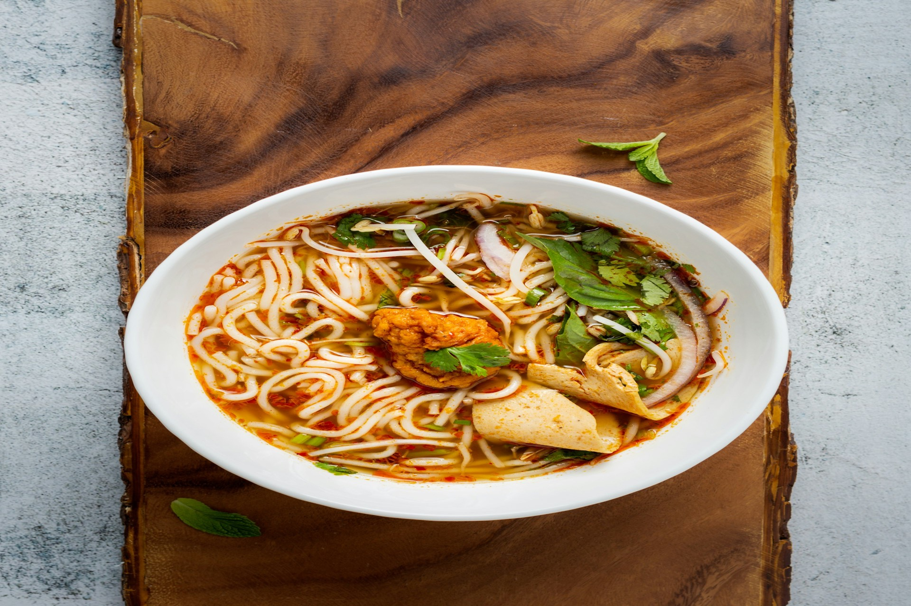

札嘎其市場海鮮
📍 南浦洞區 釜山最大魚市場
秋天是海鮮的季節，札嘎其市場的梭子蟹、花蟹最肥美。現選現烤或做海鮮鍋，鮮甜滋味難忘。

烤扇貝・烤鮑魚
📍 海雲台海水浴場周邊 廣安里海邊
海邊現烤扇貝和鮑魚，蒜蓉或不加調味，鮮甜多汁。秋夜配啤酒，天海一線的味蕾享受。

紅燒韓牛（갈비조림）
📍 西面豬肉街 釜山著名美食街
紅燒韓牛是釜山特色料理，醬香浓郁，牛肉軟嫩，配白飯最對味，是秋天暖身的絕佳選擇。

炸雞配啤酒（치킨앤브루）
📍 西面、南浦洞、海雲台美食街
秋天涼爽吃炸雞最對味！酥脆炸雞配冰涼啤酒，韓國秋季夜晚的經典組合，讓人回味無窮。

黑糖餅（호떡）
📍 南浦洞BIFF廣場 釜山著名觀光景點
BIFF廣場最具代表性的小吃，熱呼呼的黑糖餅，外皮酥脆，內餡香甜，散步必備。

BIFF廣場堅果糖
📍 南浦洞BIFF廣場電影街
南浦洞BIFF廣場的堅果糖是釜山特產，香脆堅果裹上焦糖，包裝精緻，是送禮自用兩相宜的伴手禮。

海鮮煎餅（해물파전）
📍 札嘎其市場 海雲台傳統市場
海鮮煎餅是韓國秋季代表性料理之一，料多實在，酥脆外皮配上海鮮的鮮甜，配馬格利酒最對味。

辣炒年糕（떡볶이）
📍 海雲台市場、廣安里路邊攤、南浦洞
釜山街頭的辣炒年糕攤，甜甜辣辣的醬汁配上Q彈年糕，秋天配一碗熱湯，暖心又暖胃。

魚板（오뎅）
📍 海雲台海水浴場路邊攤、西面鬧區
釜山代表性的路邊小吃，魚板串在湯汁中保溫，秋冬喝一口熱湯配上魚板，是道地的釜山味道。

湯飯（국밥）
📍 札嘎其市場清晨 西面傳統市場
釜山的傳統早餐，市場早起一碗熱騰騰的湯飯，暖暖的開始一天的旅程，秋天早晨最適合。